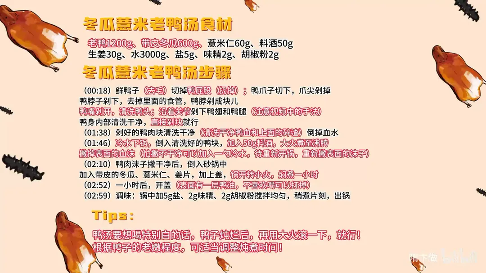

冬瓜薏米老鸭汤
隋卞一做。老鸭 1200g 剁块、冷水加 50g 料酒下锅焯净血沫，再入砂锅配带皮冬瓜 600g、薏米仁 60g、姜片，加水 3000g 小火炖一小时，最后用盐、味精、胡椒粉调味。
原视频：https://www.bilibili.com/video/BV1TZ421K7p7
食材
老鸭、带皮冬瓜 等 9 样
| 类别 | 用料 | 用量 |
|---|---|---|
| 主料 | 老鸭 | 1200g |
| 主料 | 带皮冬瓜 | 600g |
| 主料 | 薏米仁 | 60g |
| 焯水 | 料酒 | 50g |
| 辅料 | 生姜 | 30g |
| 汤水 | 水 | 3000g |
| 调料 | 盐 | 5g |
| 调料 | 味精 | 2g |
| 调料 | 胡椒粉 | 2g |
步骤
- 整理鸭子：鲜鸭子去毛，切掉鸭屁股扔掉；鸭爪子切下，爪尖剁掉。
- 剁脖去食管：鸭脖子剁下，去掉里面的食管，鸭脖剁成块儿。
- 分解鸭身：鸭嘴划开，洗净鸭头；沿骨关节剁下鸭翅和鸭腿；鸭身内部清洗干净，直接剁块就行。
- 洗肉：剁好的鸭肉块清洗干净，洗掉鸭血和上面的碎渣，倒掉血水。
- 冷水下锅：倒入清洗好的鸭块，加入 50g 料酒，大火煮至沸腾，撇掉表面的血沫。怕撇不干净可以加入一勺冷水，待重新开锅后再撇一次表面的沫子。
- 入砂锅炖：鸭肉沫子撇干净后倒入砂锅，加入带皮的冬瓜、薏米仁、姜片，加上盖，锅开转小火，炖煮一小时。
- 开盖撇油：一小时后开盖，表面会有一层鸭油，不喜欢喝可以打掉。
- 调味：锅中加 5g 盐、2g 味精、2g 胡椒粉搅拌均匀，稍煮片刻，出锅。
小贴士
- 想喝特别白的鸭汤，鸭子炖烂后再用大火滚一下就行。
- 根据鸭子的老嫩程度，可适当调整炖煮时间。
讲解要点
难度：★★☆☆☆（步骤不难，难点在处理鸭子、把血沫撇净和掌握炖煮时间）
为什么这么做
- 选老鸭不选嫩鸭：老鸭皮下脂肪少、肉紧实，炖出来香而不腻，汤也更清甜；嫩鸭油多、肉松散。
- 鸭屁股、食管气管必须去掉：鸭屁股的腺体腥臊味最重，脖子里残留的食管气管带着脏东西，留着会毁掉整锅汤。
- 鸭块先洗血水、再冷水下锅焯：血水是腥味的主要来源，冷水下锅随升温慢慢渗出，沫子才撇得干净。
- 开锅就打沫，不撇会煮回肉上：沫子粘在肉上就撇不掉了；撇不干净可以补一勺冷水，重新开锅再撇一次。
- 冬瓜带皮炖：皮能保住冬瓜的形状和清甜，炖一小时也不散，汤里的冬瓜味更浓。
- 小火慢炖一小时：小火汤清不浑、鸭肉烂而不散；想喝奶白汤，就在鸭子炖烂后再开大火滚一下。
- 只用盐、味精、胡椒粉：老鸭和冬瓜本身鲜甜，调味重了会盖住本味，克制调味才喝得出食材本身的鲜。
容易翻车
- 血沫没撇净，汤会发灰带腥，怎么调味都压不住。
- 火太大一直滚，汤浑、鸭肉散，冬瓜也炖化了。
- 冬瓜去皮再炖，容易烂成泥，汤少一层甜味。
- 鸭子偏嫩或炖的时间不够，汤味寡淡，食材本味出不来。
热评补充
- 有观众建议：鸭子不够新鲜时，先把鸭块下锅炒一下，杀去水汽再炖，腥臊气会轻一些。
原片尾卡

原片文案
AI 字幕校准稿
前两天小李问我有没有适合夏天的汤，我脑海里第一个出现的就是这个冬瓜薏米老鸭汤。鸭子有条件就选鲜的，就是市场上每天卖的那种，鲜的、不是冻的。
把鸭屁股切了，爪子切下来，爪尖剁掉；鸭脖子剁下来，把里边的食管气管揪掉；鸭嘴再剁一刀，洗干净。鸭翅直接分解，腿上有一个关节，一卷一拉就开了，不用剁，然后直接剁成块就行。剁完的鸭块也洗一下，把血和特别碎的小渣渣洗掉。
把剁好的鸭块冷水下锅，倒上料酒，开锅打血沫。不打它，一会煮着都煮到肉上面去了；没有沫子捞了就干净了。加入洗干净的带皮冬瓜、薏米仁、姜。这个煲汤在南方好多家庭都做，方法可能都略有不同，咱们这个版本比较简单，加上盖焖煮就行。怎么也得煲一个小时，锅开了之后转小火炖 60 分钟。
调味加盐、味精、胡椒粉。这个鸭汤要想喝特别白的，就把鸭子炖到烂了之后大火再滚一下，汤就变得特别白了。
来个汤，喝着还挺鲜。我觉得调味调得非常克制，里面只有鸭子那种鲜味和冬瓜的甜味，原来真的就是时间炖够了，食材本身的味道就很好吃。冬瓜带皮，冬瓜味很浓；炖汤的鸭子一定选老鸭子，皮下脂肪很少，炖出来肉紧实香，没那么多油，所以汤特别好喝。冬瓜、薏米和老鸭是非常经典的搭配，夏天祛湿非常适合喝这个汤。
整理自「隋卞一做」系列视频，仅供个人学习。